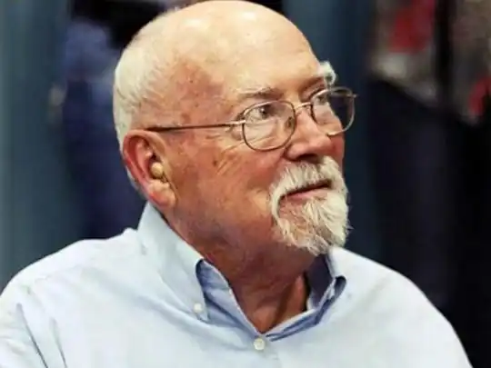
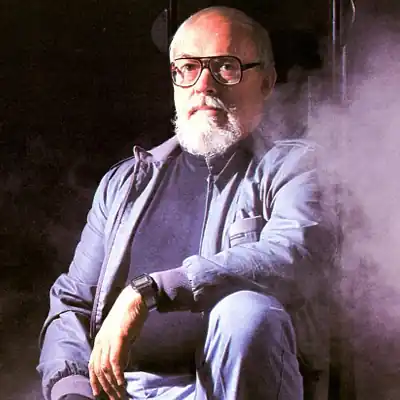

Дата народження: 12.03.1925
Письменник-фантаст. Автор понад двохсот опублікованих оповідань і 50 романів. Народився в Стемфорді, штат Коннектикут.
Предки по материнській лінії, сефардські євреї, були вигнані з Іспанії в 1492 році. Вони бігли до Голландії, а потім — в Латвії. Мати народилася в місті Лудза, потім сім'я переїхала до Петербурга. Пізніше сім'я на чолі з дідом Гаррісона емігрувала до Америки Навчався в художній школі в Нью-Йорку. У 1943-1946 служив у ВПС США, отримав звання сержанта. За власним визнанням в численних інтерв'ю, зненавидів армію, що отримало своє відображення в його романах. Зокрема в одному з найбільш антимілітаристських романів всієї сучасної фантастики — "Білл — герой Галактики". Працював художником, редактором. З 1956 — професійний літератор. Першою книжкової публікацією Гаррі Гаррісона був роман "Нестримна планета" (Deathworld 1960), який в наступні роки був продовжений в трилогію героя Язона дин Альта "Інженер з етики" (Deathworld 2.1964) і "Кінні варвари" (Deathworld 3. 1968). Більш успішним був вихід десятитомного циклу про "сталевий щура" Джиммі ді Гризе, який вперше був показаний в романі "Агенти в космосі" ( "The Stainless Steel Rat.1961. — Щур з нержавіючої сталі). Незвичайна комбінація гумору і наукової фантастики мала відбиток у багатьох його наступних творах, такому як (Білл, герой галактики. 1965), з якого бере початок серія "Білл, герой галактики", яким тим часом починається співпраця над семи томами з Робертом Шеклі, Девідом Бішофф і іншими. "Машина часу Technocolor" (Technocolor Time Machine.1967) описує спробу знімальної групи спонукати вікінгів до відкриття Америки. Роман "Посуньтесь! Посуньтесь!" (Make Room! Make Room! 1966) має дещо інший тон. Цікаве бачення небезпеки перенаселення під назвою "Рік 2022 ... які хочуть вижити" було знято на плівку Річардом Фляйшер, в головних ролях Чарльтон Хестон і Едвард Дж.Робинсон. Крім численних подальших окремо розташованих романів — ілюстрований роман "Історія планети" (Planet Story.1979), який виник у співпраці з художником Джиммі Барнсом, Гаррісон пише трилогію "До зірок" (To the Stars.1981) а також тритомний Едемський цикл (1986 —88), який відображений в незвичному образі альтернативного світу. Гаррі Гаррісон разом зі своєю сім'єю об'їхав понад 50 країн, вони жили в багатьох країнах Європи. В даний час він проживає в Ірландії. Є активним прихильником мови есперанто, який використовує і в багатьох своїх романах, як мова майбутнього. Член Всесвітньої асоціації есперанто. Крім есперанто говорить на 7 мовах. Цікаві факти з життя Коли батько пішов реєструвати новонародженого, то записав його як Генрі Максвелл Демпсі, сім'ї сказавши, що хлопчика нарекли Гаррі Гаррісоном. Виявилося це лише коли Гаррісон вже був підлітком. Таким чином, це єдиний в світі письменник, який використовує в якості псевдоніма своє справжнє ім'я.